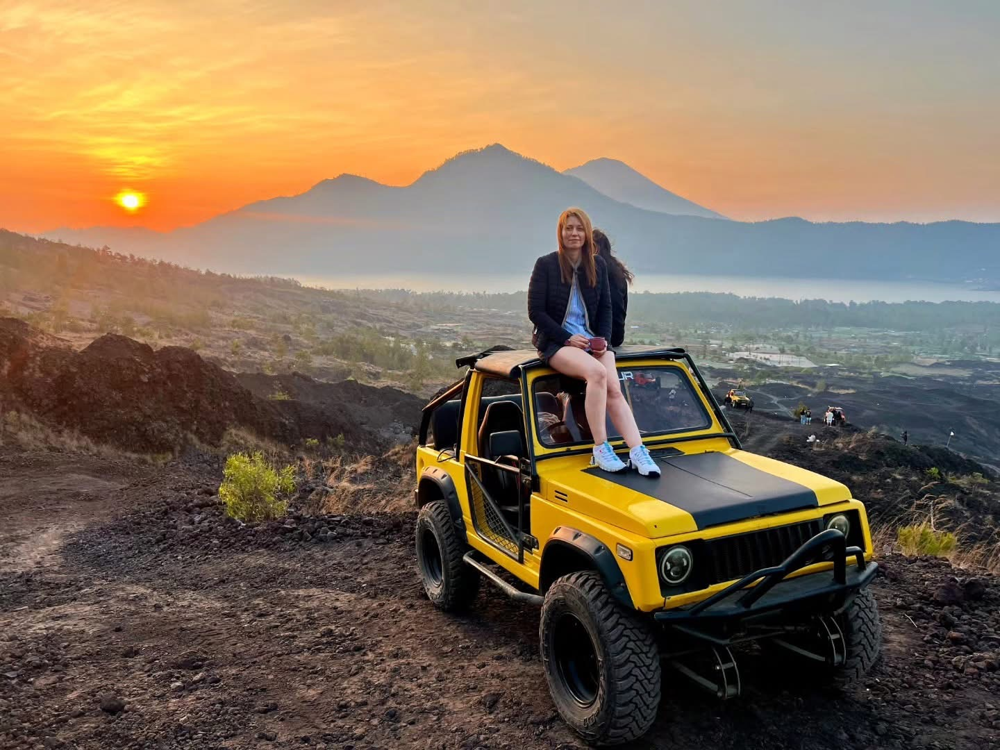
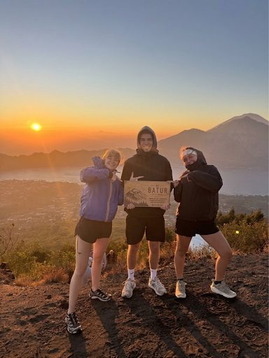
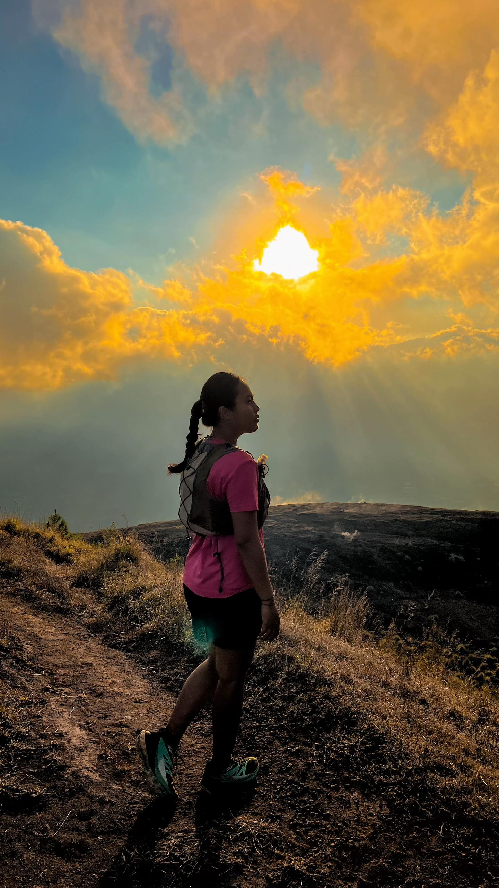
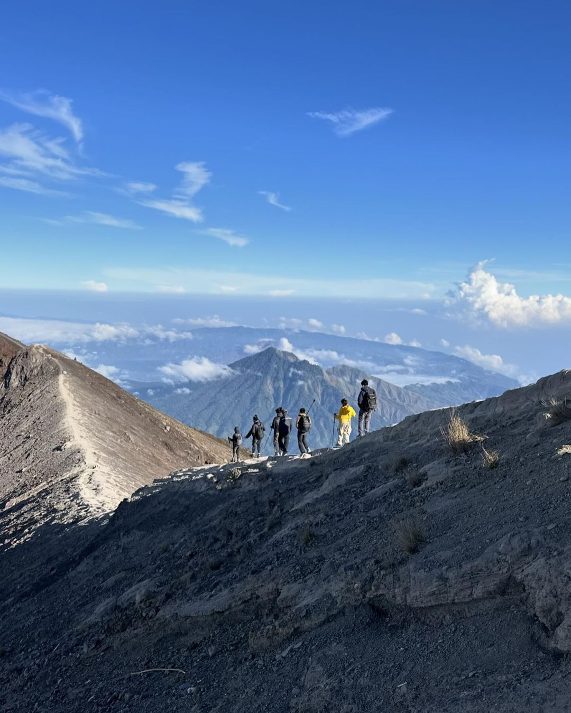
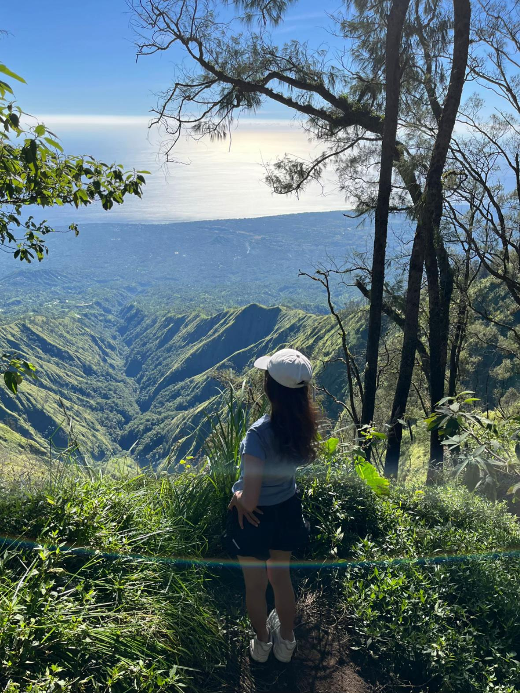
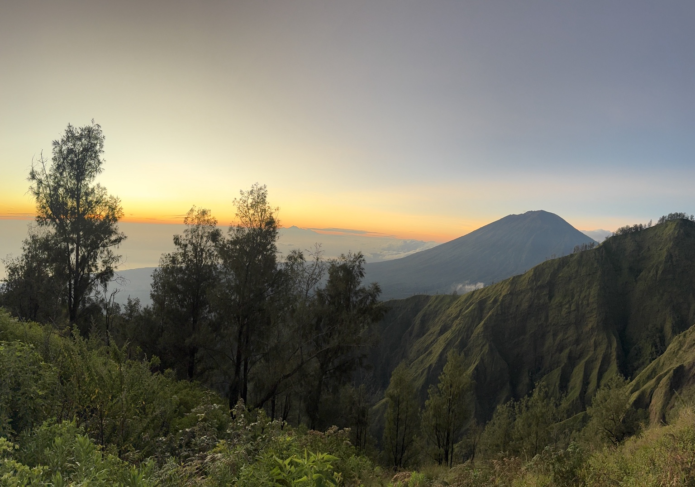

Officially Licensed Local Guides
Led by certified Kintamani locals who know every step of the trail, and are friendly and happy to help capture your best photos.

OUR SERVICE ADVANTAGES
Our commitment to giving you the safest, most comfortable, and most memorable trekking adventure.
Led by certified Kintamani locals who know every step of the trail, and are friendly and happy to help capture your best photos.
The shuttle car and trekking guide are exclusively for you and your group. No need to rush or keep up with strangers’ pace.
All rates are calculated transparently via the Price Calculator. There are no hidden costs (hidden fees) or forced shopping stops during the trip.
THE BEST EXPERIENCE IN BALI
Mount Batur is an active volcano in Kintamani that offers spectacular natural panoramas. At 1,717 m, the climb is relatively beginner-friendly while still delivering an outstanding sense of adventure.
Enjoy panoramic views of the caldera, hills, and volcanic landscape of Mount Batur in natural daylight.
Explore the rocky trails and volcanic scenery of Mount Batur with a local guide. Rest breaks can be adjusted during the trek.
Accompanied by a friendly local Kintamani guide who carries your gear and helps take the best photos.
About 5–6 hours
Private Car
Moderate
Included
Customize your adventure, calculate your total price, and book your Mount Batur Daytime Trekking experience in just a few steps.
Choose your preferred trekking date and number of participants.
Choose your pickup option.
Add more adventure to your trip.
Two beautiful stops at no additional tour cost.
Prices are estimates for the selected options.
Private pickup at your hotel or villa. Pickup time depends on your accommodation zone; the driver will confirm details via WhatsApp the day before.
Meet your local guide, get your trekking gear ready, and attend a short briefing before the climb.
Begin along the hiking trail at a pace adjusted to the conditions and the participants’ ability.
Rest for a moment, catch your breath, and drink some water before continuing the climb.
Continue the climb along the volcanic trail toward the summit area or a viewpoint.
Arrive at the summit area or a viewpoint chosen by the guide, then enjoy the daytime scenery.
Rest, enjoy the daytime panorama, and take photos. Rest duration adapts to trail conditions and the group’s pace.
Explore the area around the main crater, following your guide’s directions and the trail conditions at the time.
Descend with your guide along the designated trail back to the starting point of the climb.
Return your gear and wrap up the activity at basecamp. If you chose a package with transfer, the trip back to your hotel follows the transport arrangement.
CLEAR & TRANSPARENT SERVICE
Check what is included and which costs are your own responsibility before starting your adventure.
No need to bring: Mineral water, a headlamp/flashlight, and a trekking pole are provided by AWAN TREKKING as part of the package.
The trekking experience generally takes around 5–6 hours, depending on the pace of the group, trail conditions, and time spent at the summit.
It can be suitable for beginners with a reasonable level of fitness. The route includes uphill walking on uneven terrain, so take your time and follow your guide’s instructions.
Yes. You can select Hotel Pick-Up when booking. The round-trip transfer fee depends on your accommodation area and will be confirmed by our team. You can also choose to meet at the designated meeting point.
Pick-up time depends on your location. Our team will confirm the schedule and share the driver’s contact details via WhatsApp before the activity.
Mineral water and trekking equipment are provided according to the confirmed package details. Lunch is included in the daytime trekking package, according to the confirmed booking details.
Bring suitable trekking or sports shoes, sunscreen, a hat or cap, a camera or phone, a small bag, personal medication if needed, and a change of clothes if you wish. Mineral water, a headlamp or flashlight, and a trekking pole are provided.
Optional activities may be available depending on the package. Select the activity you want during booking and check the displayed additional costs before confirming.
Choose your package and activity date, enter your booking details, and submit the form to contact AWAN TREKKING through WhatsApp. Our team will confirm the arrangements with you.
Cash payment is commonly used. Please confirm the payment arrangement with our team when your booking is discussed.
Safety comes first. Your guide or the operator may adjust the itinerary if weather or trail conditions require it. Please follow the team’s guidance and contact us if you have questions before your activity.
Make your Bali adventure even more memorable. Explore our other experiences and contact our team for package details and availability.

Jeep SunriseEnjoy Mount Batur sunrise from a 4x4 Jeep, with options for scenic volcanic stops.

Daytime TrekkingExperience a magical sunrise from the summit of Mount Batur with our local guide.
 Jeep Day Trip
Jeep Day TripDiscover Mount Batur’s volcanic landscape on a scenic 4WD Jeep adventure.

Sunset TrekkingEnjoy golden-hour views and a memorable Mount Batur sunset trek with a local guide.
 Sunset Jeep Tour
Sunset Jeep TourTake in Mount Batur’s sunset scenery by Jeep with a choice of volcanic routes.
 WATERFALL EXPEDITION
WATERFALL EXPEDITIONDiscover Bali’s beautiful waterfalls with private transport and an experienced local guide.
 WHITE WATER RAFTING
WHITE WATER RAFTINGEnjoy an exciting river rafting adventure surrounded by Bali’s tropical scenery.
 QUAD BIKE ATV
QUAD BIKE ATVRide through jungle tracks, muddy trails and exciting off-road scenery on an ATV.
 ATV + RAFTING
ATV + RAFTINGCombine an off-road ATV ride with an exciting Ayung River rafting experience.

SUNRISE TREKKINGChallenge yourself with a Mount Agung sunrise trek and sweeping mountain views.

JUNGLE TREKKINGExplore Mount Abang’s peaceful forest trails and enjoy beautiful highland scenery.

SUNRISE TREKKINGDiscover Trunyan Hill at sunrise for a quieter trek and panoramic views of the Batur caldera.
YOUR EXPERIENCE MATTERS
Share your experience with AWAN TREKKING and help future adventurers plan their journey.
There are no guest reviews here yet. If you have joined one of our tours, you can share your feedback using the button below.
Reviews submitted here are saved in this browser on this device. They are not automatically sent to AWAN TREKKING or shared with other visitors.
Choose this option if you are coming to the location on your own. Highly recommended for guests staying in Songan or Toya Bungkah, as well as guests who have a motorbike and want to go straight to the meeting point.
Jl. Pendakian Gn. Batur, Batur Tengah, Kintamani District, Bangli Regency, Bali.
Get Directions – Google MapsChoose this service if you want to be picked up directly from your hotel or villa by private car and taken to the starting point of the hike.
Transport costs depend on the pickup area. The hotel name and pickup address are requested when filling in the booking form.
Pickup details will be confirmed via WhatsApp the day before the activity.
Choose Hotel Pick-UpTips: If you are staying in Songan or Toya Bungkah, or have your own motorbike, we recommend choosing Meeting Point so you can go straight to the meeting location. If you need a pickup car from your hotel or villa, choose Hotel Pick-Up.
Plan your private daytime trek with a local guide. Choose your activity date, select a meeting point or hotel transfer, and check your estimated price before contacting our team.
Our AWAN TREKKING customer service team is happy to help with trekking preparation, bookings for large groups, pickup questions, and customized tour package requests. Contact us and we’ll help you plan the right experience.
Dedicated booking page. Review your selection summary, then complete your personal details to prepare your order.